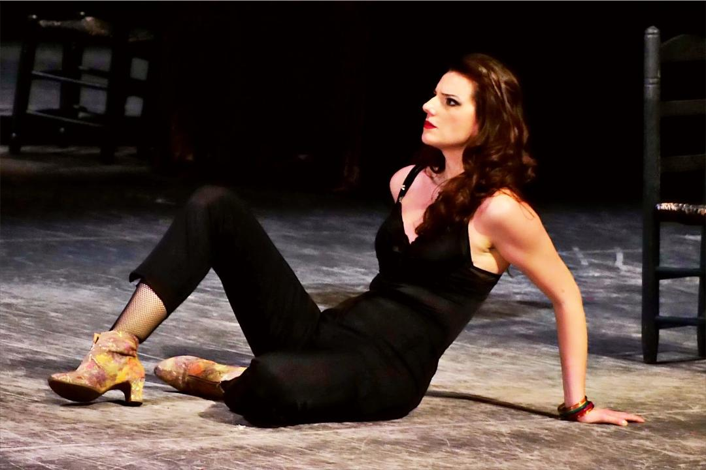

Mezzosoprano Martina Mikelic is renowned for her exceptional lower register, distinctive dark timbre, and compelling stage presence. She enjoys an international career spanning both the operatic and concert stages, with appearances at many of Europe's and Asia's leading opera houses and concert venues, including the Vienna State Opera, Stuttgart State Opera, Teatro Real Madrid, Komische Oper Berlin, the Musikverein Vienna, the Accademia Nazionale di Santa Cecilia in Rome, Tokyo Bunka Kaikan, the Vienna Konzerthaus, and the Salzburg Festival.
Throughout her career, Martina Mikelić has collaborated with numerous internationally acclaimed conductors, including Christian Thielemann, Daniele Gatti, Riccardo Muti, Valery Gergiev, Mirga Gražinytė-Tyla, Franz Welser-Möst, Peter Schneider, Cornelius Meister, Pascal Rophé, Henrik Nánási, Ivan Repušić, Sascha Goetzel, Antony Hermus and many others. She has also performed with a wide range of distinguished orchestras and ensembles.
Her current and forthcoming engagements include her debut as Princess Eboli at the world's oldest summer festival in Split, Rusalka at the Oper Graz, the New Year's Eve Gala with the HRT Symphony Orchestra alongside internationally renowned pianist Ivo Pogorelić, and Suor Angelica with the Nederlandse Reisopera.
In 2026, she appeared in the New Year's Concert with the Junge Philharmonie Wien, made her debut in Weimar with the Staatskapelle Weimar, and took part in the world premiere of Station Paradiso, a new opera by composer Sara Glojnarić, at the Stuttgart State Opera.
The 2025 season was marked by several important debuts, including performances at Teatro Real Madrid, her debut as Ježibaba at the Croatian National Theatre in Zagreb, and her first appearance at the Dubrovnik Summer Festival.
In 2024, Martina Mikelić returned to the Stuttgart State Opera, where she made her role debut as the Witch in Hänsel and Gretel. She also made her debut in her hometown of Split in the title role of Jakov Gotovac's opera Mila Gojsalić at the Croatian National Theatre in Split. Another highlight of the season was her appearance in Salzburg, where she received critical acclaim for performing the dual roles of Gertrud and the Witch in Thomas Mika's distinctive production of Hänsel and Gretel.
Notably, she was nominated twice for the Austrian Music Theater Award : in 2013 for the best young artist as the Page in Salome, and in 2015 for the best female supporting role as Florence Pike in Albert Herring.
In 2023, she made her debut at the Stuttgart State Opera and at the Vatroslav Lisinski Concert Hall in Zagreb. There she performed with pianist Martina Filjak and the Croatian Radiotelevision Symphony Orchestra under the baton of Pascal Rophé at the inaugural Dora Pejačević Festival , commemorating the 100th anniversary of the composer's death. The concert was broadcast on both television and radio.
Further highlights of her international career include appearances in Vienna, Rome, Madrid, Zurich, Amsterdam, Graz, Zaragoza, Tokyo, Moscow, Salzburg, Aarhus, Hamburg, Berlin , and many other major cultural centres.
Since making her debut as the Third Lady in The Magic Flute in 2009, Martina Mikelić has been a member of the ensemble of the Volksoper Wien . There she has built an extensive repertoire ranging from Mozart and the German and Italian operatic traditions to contemporary music theatre. Her principal roles include Carmen (Carmen), Hippolyta (A Midsummer Night's Dream), Prince Orlofsky (Die Fledermaus), Magdalena (Der Evangelimann), Ježibaba (Rusalka), Zita (Gianni Schicchi), Maddalena (Rigoletto), Page (Salome), Florence Pike (Albert Herring), Konchakovna (Prince Igor), Afra (La Wally), The Mother's Voice (Les contes d'Hoffmann), the alto solo in Berlioz's Roméo et Juliette, The Messenger (Das Wunder der Heliane), Mary (The Flying Dutchman), and numerous other operatic roles.
Born in Split, Croatia, Martina Mikelić studied voice at the University of Music and Performing Arts Vienna (MDW), where she completed her Master's degree in Lied and Oratorio under the guidance of Professor Robert Holl.
While still a student, her exceptional stage presence and remarkable vocal talent received early recognition. The MDW named her Artist of the Month and selected her as one of the ten most outstanding young talents among all Austrian universities of the arts. The Austrian radio programme Intrada (Ö1/ORF) dedicated a special artist portrait to her.